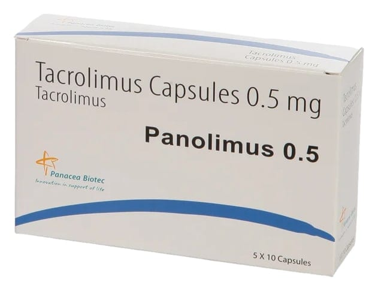

Panolimus 0,5 mg Kapsül, 50 Adet

Ne için kullanılır
KT · Bölüm 1• PANOLİMUS 0.5 mg kapsül, her biri beyaz veya beyazımsı granüle toz içeren, açık sarı/açık sarı renkli 50 kapsüllük ambalajlarda takdim edilmektedir. Kutu içerisinde 10 kapsüllük 5 blister bulunmaktadır.
• PANOLİMUS, immünosüpresanlar adı verilen bir ilaç grubuna aittir. Organ naklinizi takiben (örn. karaciğer, böbrek, kalp) vücudunuzun bağışıklık sistemi yeni organı reddetmeye çalışacaktır. PANOLİMUS, vücudunuzun bağışıklık cevabını kontrol ederek, vücudunuzun nakledilen organı kabul etmesini sağlamak için kullanılmaktadır. PANOLİMUS çoğu kez, bağışıklık sistemini baskılayan diğer ilaçlarla birlikte kullanılır.
• Ayrıca PANOLİMUS, size nakledilen karaciğer, böbrek, kalp ya da diğer organınızın devam eden reddi için ya da daha önceden almış olduğunuz tedavinin transplantasyonundan sonraki bağışıklık cevabını kontrol edemediği durumlarda da verilebilir.